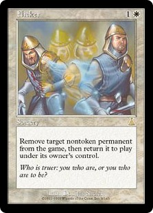

The Stack refers to an Magic the Gathering (MTG) ruleset detailing the way in which spells interact when cast.
How does The Stack work?
Similar to the stacks in computer science MTGs stack operates in a last in, first out policy. This is most simply explained by one of magic's most iconic interactions. To set the stage, you're in the finals of a grand prix. You attempt to
Lightning Bolt
your opponents
Grizzly Bears
to kill them. Then, out of nowhere they cast
CounterSpell
, countering your Lightning Bolt. Now let's see how this interaction worked. First, you casted Lightning Bolt and Lightning Bolt was placed on the stack; then, you passed priority to your opponent. Your opponent casted CounterSpell targeting your Lightning Bolt and his CounterSpell was placed on the stack after yours. Following the last in, first out method we find that the first action to occur once both players relieve priority is the CounterSpell going off. Once the CounterSpell has successfully resolved, your Lightning Bolt is countered, meaning it will no longer kill their Grizzly Bears, and it will subsequently be sent to your graveyard. This interaction is fairly simple and straight-forward, but the stack can easily become extremely confusing.
Slightly More Confusing Cases
Case 1:
You're at three life. You cast Healing Salve on yourself to gain three life, in response your opponent casts Lightning Bolt targeting you. What happens?
In this scenario Lightning Bolt is the last card to go onto the stack. So following our last in, first out rule, we know that the Lightning Bolt will resolve first dealing three damage to you and reducing your life to zero. Once state-based effects are checked after the spells resolutuion, you lose the game.
Case 2:
You cast
Murder
on an opponents Grizzly Bears. In response your opponent casts
Flicker
onto their Grizzly Bears causing them to be removed the game, then immediately placed back onto the battlefield. What happens?

This is a scenario that doesn't have the most intuitive result. When they cast Flicker after your Murder, they're Grizzly Bears immediately leaves the battlefield, then returns. Then the murder goes to resolve. Intuitively we would think that when the murder resolves next, the Grizzly Bears would die. Instead the Grizzly Bears don't die to the Murder because when they return to the battlefield after leaving, they are treated as a completely different permenant that the Murder no longer recognizes as it's target. Thus the Murder fizzles and just moves straight to your graveyard.